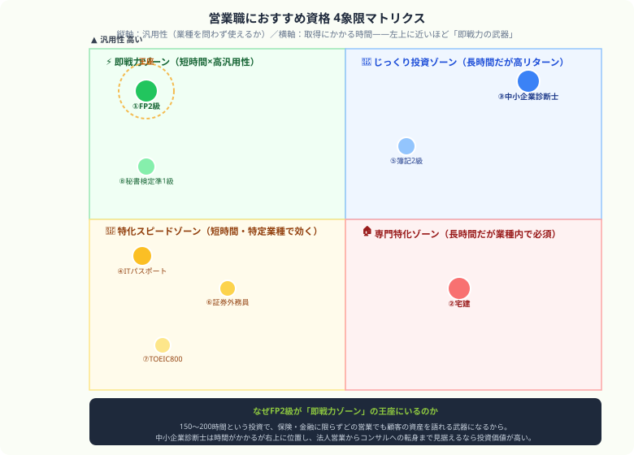

営業職におすすめ資格ランキング2026｜転職・年収アップ・顧客信頼獲得に役立つ資格まとめ
「営業成績を上げたいけど、資格の勉強なんて数字のノルマに追われてる自分には無理だ…」——月末が近づくたび、そんな焦りで胃が痛くなっていませんか？私は会計士試験の勉強を経て、いまも簿記1級で日々「数字」と向き合っていますが、実は営業の成約率を上げる武器も、突き詰めると全部「数字」に行き着きます。この記事では、簿記・会計を学び続けてきた数字の視点から、顧客の信頼を本気で勝ち取り、成約率を跳ね上げる【本当に営業職に価値のある8資格】を、忖度なしの本音で熱く紹介します！
資格名ではなく、次の商談で使う知識から選ぶ
営業向け資格をランキングだけで選ぶと、取得後に使い道がなくなります。まず自分が話す相手の課題を一つ書き、その課題を説明するために必要な知識を資格の候補と照らします。
| 商談で扱う課題 | 先に確認する知識 | 2週間の試し方 |
|---|---|---|
| 会社の数字や経営課題 | 財務諸表・利益・資金の流れ | 公開資料を一つ選び、数字を3行で説明する |
| 個人のお金や生活設計 | 保険・税金・資産形成の基本 | 相談相手の質問を想定し、用語を自分の言葉で説明する |
| ITサービスや業務改善 | 業務・データ・セキュリティの基礎 | 顧客の業務を一つ選び、導入前後の変化を図にする |
資格は「足し算」じゃなくて「掛け算」で選べ
営業職が資格を取るメリット
- 顧客信頼の向上：資格保有で専門家としての信頼度が上がり、成約率が向上する
- 転職市場での差別化：「営業経験＋専門資格」の組み合わせは最強の市場価値
- 商材知識の体系化：保険・不動産・金融などの商材を正確に理解できる
- 管理職・企画職へのキャリアチェンジ：中小企業診断士などがキャリア転換に有効
業種別おすすめ資格一覧
| 営業の業種 | おすすめ資格 | 必要性 |
|---|---|---|
| 保険・金融営業 | FP2級・生命保険募集人・損害保険募集人 | 職種・商品により推奨 |
| 不動産営業 | 宅建・マンション管理士・管理業務主任者 | 宅建を活かしやすい |
| IT・SaaS営業 | ITパスポート・基本情報・AWS資格 | 知識証明として推奨 |
| 法人営業全般 | 中小企業診断士・FP2級・簿記2級 | 推奨 |
| 医療・製薬営業（MR） | MR認定証・薬剤師（難関） | 企業・職種により必要 |
| 建設・建材営業 | 宅建・二級建築士・施工管理技士 | 推奨 |

縦軸は汎用性、横軸は取得時間。左上の即戦力ゾーンほど、今すぐ成約率に効く資格です。
営業職おすすめ資格ランキングTOP8
FP2級（ファイナンシャルプランナー）汎用性最強
勉強時間：150〜200時間｜合格率：約40%｜難易度：★★★☆☆
保険・金融・不動産・相続・税金の幅広い知識が身につく。保険営業・金融営業で顧客の資産全体の視点で提案できるようになり、成約率が向上する。どの業種の営業マンでも使える汎用性の高い資格。
宅地建物取引士（宅建）
勉強時間：300〜400時間｜合格率：約15〜17%｜難易度：★★★☆☆
不動産営業では、宅建士が重要事項説明や契約書等への記名を担う場面があります。宅建業者は原則として事務所ごとに5人に1人以上の専任宅建士を置く必要があるため、不動産営業で活かしやすい資格です。資格手当や採用での評価は会社規定・職種により異なります。
中小企業診断士法人営業最強
勉強時間：800〜1,200時間｜合格率：約4%｜難易度：★★★★★
法人営業で最も評価が高い資格。経営・財務・マーケティング・IT・物流まで幅広い知識が身につき、社長・経営幹部との商談で対等に話せるようになる。取得後はコンサル・経営企画への転職も可能。
ITパスポート・基本情報技術者
勉強時間：50〜200時間｜合格率：40〜50%｜難易度：★★〜★★★☆☆
IT・SaaS・クラウドサービスの営業ではIT知識が提案の土台になります。顧客の課題をIT視点で理解し、適切な提案ができるようになる。SIer・ITベンダーへの転職での評価は求人や企業により異なります。ITパスポートから始めて基本情報を目指す方法もあります。
日商簿記2級
勉強時間：200〜350時間｜合格率：約20〜30%｜難易度：★★★☆☆
法人営業で決算書を読めることが顧客の信頼につながる。顧客企業の財務状況を把握した上での提案は、競合との差別化になる。経営企画・財務へのキャリアチェンジにも使える。
証券外務員（一種・二種）
勉強時間：100〜200時間｜合格率：約70%｜難易度：★★☆☆☆
証券業務などでは、金融商品を扱う業務範囲に応じた登録・社内要件が関係します。具体的な必要資格は勤務先と担当業務で確認しましょう。二種から始めて一種を目指す方法や、FP2級と組み合わせて金融知識を補う方法があります。
TOEIC 800点以上
外資系企業・グローバル製品の営業では英語力が求められる求人があります。外資系メーカー・コンサル・IT企業への転職で評価されるかは、求人の要件や面接での実務力によって異なります。点数だけで採用結果が決まるわけではありません。
秘書検定準1級
勉強時間：80〜120時間｜合格率：約35%｜難易度：★★★☆☆
ビジネスマナー・接遇・言葉遣いを体系的に学べる資格。対面営業で高評価を受けるプロフェッショナルな立ち振る舞いが身につく。面接試験（模擬的なビジネス場面への対応）があり、実践的なコミュニケーション力が鍛えられる。
業種別・年収別の資格取得ロードマップ
| 現在の状況 | 次の一手 | 期待効果 |
|---|---|---|
| 保険営業・年収400万 | FP2級取得 | 成約率向上・資格手当+3〜5万/月 |
| 不動産営業・未資格 | 宅建取得 | 重要事項説明が可能に・資格手当 |
| IT営業・非エンジニア | ITパスポート→基本情報 | 顧客との技術会話が可能に |
| 法人営業・転職希望 | 中小企業診断士 | コンサル・経営企画への転職 |
| 営業管理職・昇格希望 | 中小企業診断士＋MBA | 経営幹部への昇進 |
次の一手：直近の商談1件と結びつく資格知識を1つメモする。 就活に活かす資格を見る